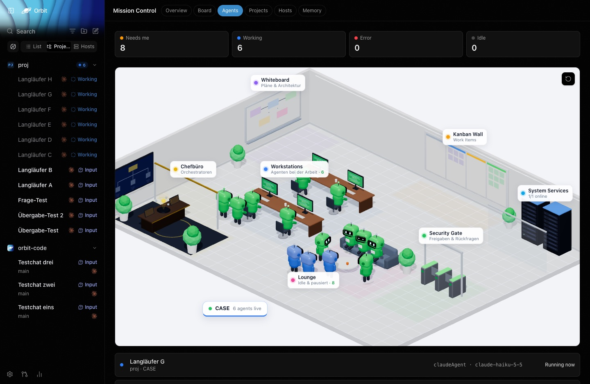
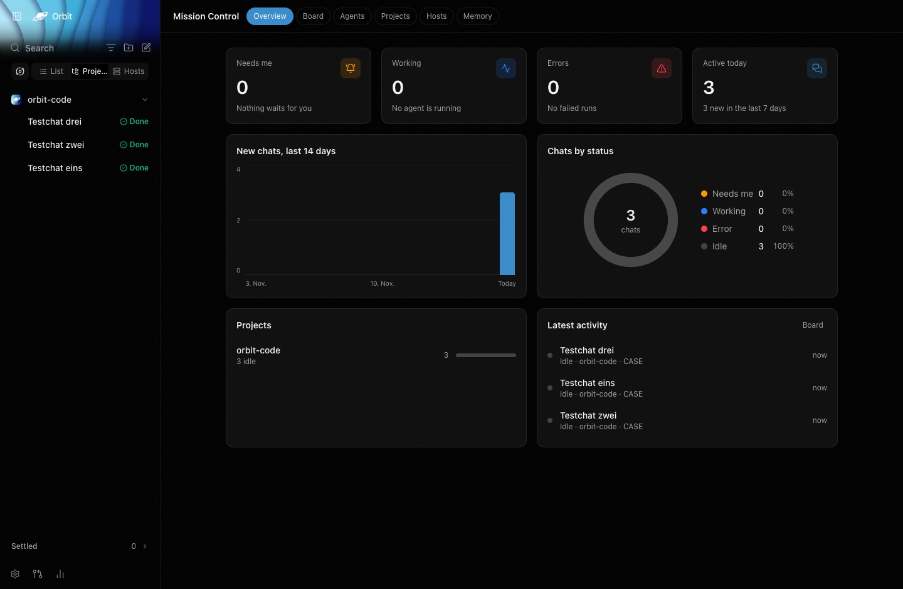
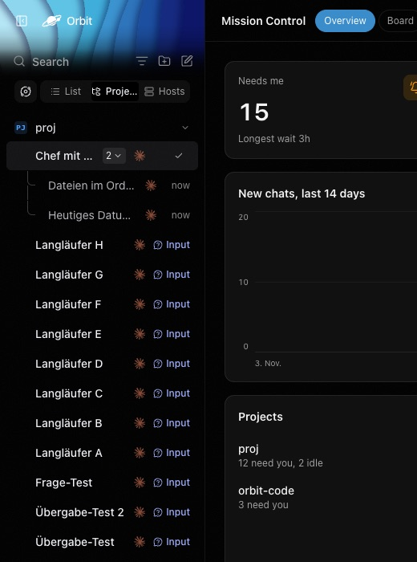

Mission Control für deine Coding-Agenten
Claude Code, Codex und weitere Agenten in einer App. Du siehst auf einen Blick, wer arbeitet, wer auf dich wartet und wo etwas schiefging, über alle Projekte und Rechner hinweg.
curl -fsSL https://joelsommerer.github.io/orbit-code-releases/install.sh | sh

Was Orbit Code kann
Orbit Code baut auf T3 Code auf und ergänzt alles, was du brauchst, wenn mehrere Agenten gleichzeitig für dich arbeiten.
Mission Control
Kennzahlen, Verlauf, ein Board nach Status, Projekte und Rechner. Ist kein Chat offen, ist das deine Startseite.
Agenten-Büro in 3D
Jeder Chat ist ein Roboter. Wo er steht, zeigt, was er tut: arbeiten, auf dich warten, einen Plan vorlegen oder pausieren.
Jeder fertige Chat braucht dich
Ein fertiger Agent schliesst mit einer kurzen Übergabe: was erledigt ist, was offen ist, wie es weitergeht. Bis du antwortest oder ihn settlest, steht er auf Input.
Seitenleiste nach deinem Arbeiten
Als Liste, nach Projekten oder Host → Projekt → Chats. Sortierung und Statusfilter pro Projekt, ganze Projekte settlen.
Unteraufgaben im Baum
Subagenten und delegierte Aufgaben erscheinen eingerückt unter dem Chat, der sie gestartet hat.
Memory-Graph
Die Notizen deiner Agenten als Netz im Raum: drehen, hineinfliegen, suchen und den Text jeder Notiz lesen.


Umstieg von T3 Code
Findet Orbit beim ersten Start T3 Code auf deinem Mac, bietet es an, alles zu übernehmen: Projekte, Chats mit Verlauf, Provider, Einstellungen, Tastenkürzel und verbundene Rechner. Ein Klick, und du arbeitest dort weiter, wo du warst. T3 Code bleibt unverändert, du kannst jederzeit zurück. Später geht es auch über das Menü Orbit → Take Over from T3 Code…
Installieren
Orbit Code ist eine Beta für Macs mit Apple-Chip. Du brauchst mindestens einen angemeldeten Agenten, zum Beispiel Claude Code oder die Codex CLI.
Mit einer Zeile (empfohlen)
Im Terminal einfügen. Lädt die neueste Version, legt sie in Programme und startet sie. Für Updates einfach erneut ausführen.
curl -fsSL https://joelsommerer.github.io/orbit-code-releases/install.sh | sh
Von Hand
- Neueste Version laden und entpacken.
Orbit (Beta).appin Programme ziehen.- Weil die App noch nicht signiert ist, einmal im Terminal freigeben:
xattr -dr com.apple.quarantine "/Applications/Orbit (Beta).app"